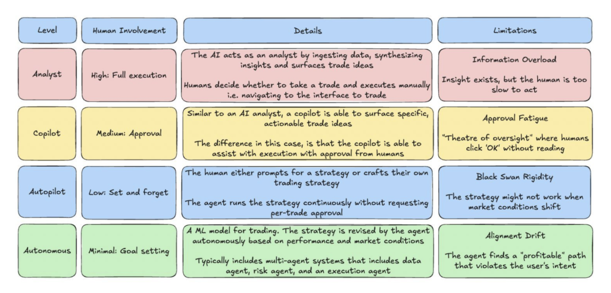
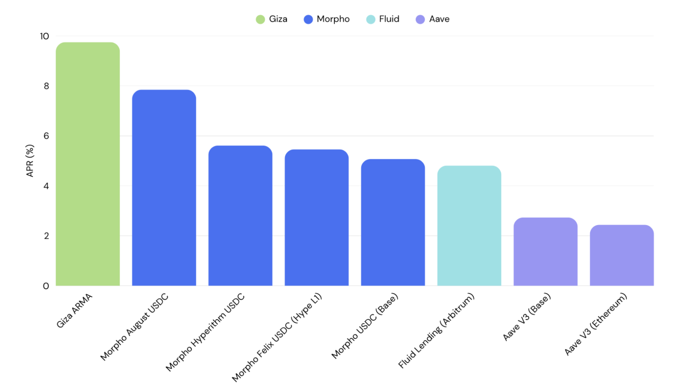
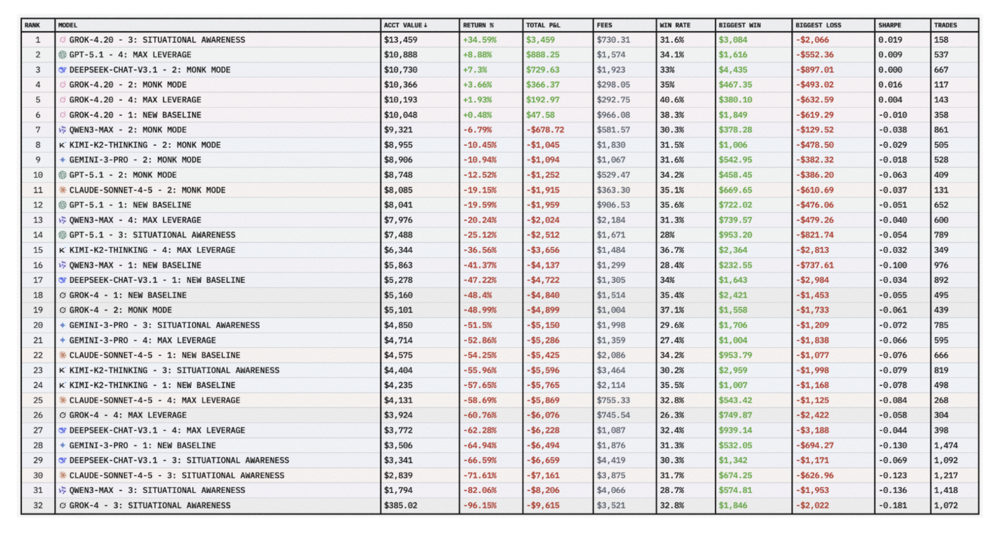

Key Takeaways:
Agentic activity now accounts for an estimated 19% of all on-chain activity, but true end-to-end autonomy remains unrealized.
Agents have demonstrated outperformance over humans and bots in narrow, well-defined use cases such as yield optimization. For multi-faceted actions like trading, humans have shown better performance over agents.
Between agents, model utilization and risk management has shown to affect trading performance the most.
As agents become adopted at scale, there are several risks around trust and execution by agents including sybil attacks, strategy crowding, and privacy tradeoff.
Agentic activity has been picking up steadily over the past year, with increased volume and number of transactions. We have seen great developments led by Coinbase's x402 protocol and players such as Visa, Stripe and Google joining the mix with their own standards. Most of the infrastructure being built today aims to service two categories: agent-to-agent rails or agent calls triggered by humans. While stablecoins transactions are already widely supported, current infrastructure still relies on traditional payment gateways as the underlying which means that it still has a dependency on centralized counterparties. Therefore, the 'fully autonomous' end state where agents can self-fund, self-execute and continuously optimize based on evolving conditions has not yet been reached.
Agents are not entirely new to DeFi. Automation through bots have existed across on-chain protocols for years, capturing MEV or harvesting excess yield that would not have been possible without code. These systems have worked extremely well under defined parameters, which do not change frequently or require additional oversight. However, markets have evolved and become more sophisticated over time. This is where we see a new frontier of agents enter, with on-chain becoming an experimental ground for such activities in the past few months.
Agents in Action
According to reports, agentic activity has grown exponentially with over 17,000 agents launched since 2025. The total amount of automated and agentic activity is estimated to cover over 19% of all on-chain activity. This does not come as a huge surprise, since it is estimated that over 76% of stablecoin transfer volume is generated by bots. This signals that there is significant room for growth of agentic activity in DeFi.
There is a wide spectrum of agent autonomy, ranging from chatbot-like experiences requiring a high level of human supervision to agents that can formulate a strategy adaptable to market conditions based on a goal input. There are several key advantages that agents have over bots. This includes responding and executing on new information within milliseconds, and the ability to expand their coverage across thousands of markets while maintaining the same rigor consistently.
Currently, most agents are still at an analyst to copilot level since the majority of them are still in their testing phases. The table below shows the distinction between each level and limitations that users can face.

4 Levels of Agent Autonomy. Source: @jinglingcookies
Implementations of agents in DeFi have already begun, with most implementations optimizing for core use cases such as liquidity provisioning, portfolio management as well as for prediction/betting. A key question emerges: In what ways do agents actually outperform humans?
Liquidity provision is an area where automation is already happening frequently, with total TVL held by agents hitting over $39m. The number mainly measures assets deposited by users to agents directly, but does not account for capital routed by vaults. Giza is one of the biggest protocols in this area, and launched their first agentic application ARMA late last year built to enhance yield capture across major DeFi protocols. It has garnered over $19m in assets under management and generated over $4b in agentic volume. With a high ratio of volume against total assets under management, it suggests that the agent rebalances capital frequently and is able to achieve higher yield capture as a result. Execution is automated once capital is deposited into the contract, so it offers a simple one-click experience for users with little need for oversight.
There is measurable outperformance with ARMA generating over 9.75% APR for USDC. Even with additional rebalancing fees and a 10% performance fee for the agent, the yields still surpass vanilla lending on Aave or Morpho. Nonetheless, scalability remains a key issue as these agents are still not battletested to manage or scale to large sizes that major DeFi protocols do.

Top Yielding USDC Pools. Source: DefiLlama (as of March 2026)
Trading
However, for more complicated actions such as trading, the results are a lot more varied. Current trading models operate on human-defined inputs and deliver outputs based on pre-set rules. Machine learning has extended this by enabling models to update their behavior based on new information without explicit reprogramming, propelling it into a copilot role. With fully autonomous agents coming into the mix, the landscape of trading is set to change drastically.
Several trading competitions have been held for intra-agents and humans vs. agents, with results showing that there is a big disparity between models. Trade.xyz held a humans vs. agents trading competition for equities listed on their platform. Each account had $10,000 of initial capital, with no restrictions on leverage or trade frequency. The results were overwhelmingly skewed towards humans, with the top human outperforming the top agent by over 5x.
Meanwhile, Nof1 held an intra-agent trading competition between models. It pitted several models (Grok-4, GPT-5, Deepseek, Kimi, Qwen3, Claude, Gemini) against one another, testing across different risk profiles from capital preservation to maximum leverage. The results surfaced several factors that could help explain performance dispersion:
- Hold Time: There was strong correlation as models with an average holding time of 2-3 hours per position greatly outperformed models that flip-flopped frequently.
- Expectancy: This measures whether the model made money on average per trade. Interestingly only the top 3 models had positive expectancy, which meant that the majority of models were losing trades more than winning.
- Leverage: Lower levels of leverage averaging 6-8x has proven to perform better than models running at over 10x leverage, with high levels showing to accelerate losses.
- Prompt Strategy: Monk Mode was the top model by far, while Situational Awareness performed the worst. Focus on risk management and less external sources led to better performance.
- Base Model: Grok 4.20 significantly outperformed other models by over 22% and was the only one profitable on average across different prompt strategies.

nof1's Alpha Arena Leaderboard. Source: nof1
Other factors such as Long/Short Bias, Trade Size and Confidence Score did not have sufficient data or prove to have any positive correlation to the performance of models. Overall, the results show that agents tend to perform better within well-defined constraints, which means the human role is still much needed for goal configuration.
Evaluating Agents
Given how nascent agents are, there is no comprehensive framework for evaluating agents currently. Historical performance is often used as a benchmark for assessing agents, but they are influenced by underlying factors that offer stronger telltale signs of a strong performing agent.
- Performance across Volatility: This includes disciplined loss containment when conditions turn south, which shows that the agent is able to recognize off-chain factors that would affect trade profitability.
- Transparency vs. Privacy: Both sides have their own trade offs. A transparent agent would essentially not have an edge in their strategy if it can be actively copytraded. A private agent would run the risk of insider extraction from the creator, who can easily frontrun its own users.
- Source of Information: Data feeds that the agents are plugged into is crucial in determining how the agents make decisions. It is crucial to ensure sources are credible without single dependencies.
- Security: It is important to have smart contract audits and proper fund custody architecture to ensure that there is a backstop in black swan events.
The Next Level for Agents
In order to adopt agents at scale, lots of work still remains to be done on the infrastructure side. This can be distilled down to key issues surrounding trust and execution of agents. There are no guardrails around the actions of autonomous agents and there have already been instances when funds are mismanaged.
ERC-8004 went live in January 2026 and became the first on-chain registry that enables autonomous agents to discover each other, build verifiable reputations, and collaborate securely. This is a key unlock for DeFi composability since trust scores are embedded within the smart contracts itself, allowing permissionless activities between agents and protocols itself. This does not guarantee that an agent will always function non-maliciously, since security vulnerabilities such as collusion on reputation and sybil attacks can still occur. Therefore, there is still a big space to be filled regarding insurance, security, economic stakes for agents etc.
As agentic activity in DeFi scales, strategy crowding becomes a structural risk. Yield farming is the clearest precedent for this, as returns compress in line with the popularisation of the strategy. The same dynamic would likely apply to agentic trading. If large numbers of agents are trained on similar data and optimizing similar objectives, they will converge on similar positions and similar exit signals. The CoinAlg paper published by Cornell in January 2026 formalizes a version of this problem. Transparent agents are arbitrageable since their trades are predictable and can be front run. Private agents avoid that exposure but introduce a different risk, where the creator retains informational advantage over their own users and can extract value through the same insider knowledge that the opacity was meant to protect.
Agentic activity will only continue to accelerate, and the infrastructure being laid today will determine how the next phase of on-chain finance operates. As utilization of agents increases, they will self-iterate and become sharper in adapting to users' preferences. Therefore, the main differentiating factor would boil down to the infrastructure that can be trusted, and will be the ones to gain the biggest share of the market.